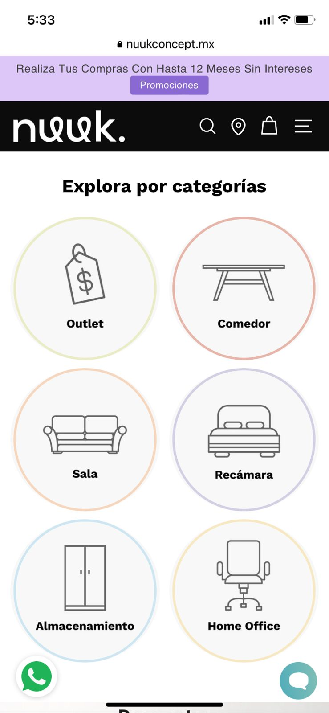

Visual Hierarchy
Anatere Canales Diseñadora
https://anaterecanales.com/Anatere Canales is a company of design, they specialize in tech accessories. The reason I chose their website for viusual hierarchy is because how they choose to prioritize the text, for example, with a big font in order to make it more visible than the head image.
Rule of Thirds
Nuuk Muebles
https://nuukconcept.mx I looked for a website that followed the rule of thirds horizontally as vertically but it was hard to find. Nuuk is a furniture shop and the categories for their product follows the rule of thirds horizontally.
White Space and Clean Design
Lani
https://www.lani.mx/Lani is a feminine hygiene centered shop, as you enter the website you can find just a few elements like the name in front of one single picture that is not full of objects and with the information that they don’t charge taxes anymore in this year. All the information that we need in just a few elements.